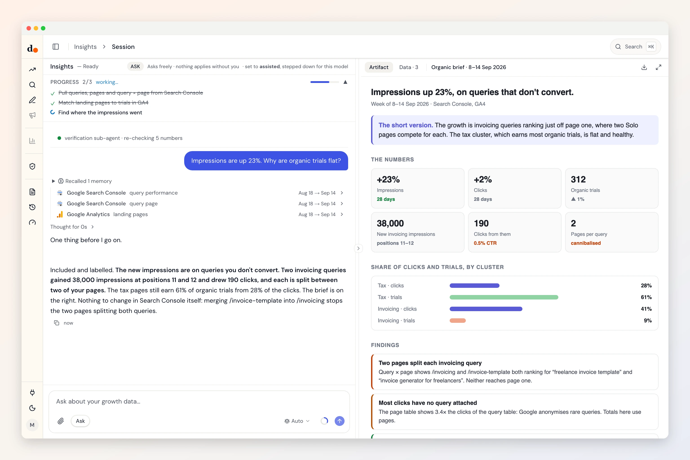

Search Console, down to the query that converts.
Duct reads the queries and pages in Search Console, and which query lands on which page, then joins it to GA4. So it can say what organic search is worth, not just how much of it there is.
- Sign in with Google
- Reads three datasets
- Read-only
- Fields audited Sep 24, 2026

Ask
Questions you can just ask
Impressions are up. Why are trials flat?

 Search Console + GA4
Search Console + GA4Which of my pages compete for the same query?
Search ConsoleWhich pages just off page one are worth pushing?
Search Console + GA4Is organic growth real, or bots?
Search Console + GA4
Access
What it reads. What it can change.
What it reads
- GSC query performancequeryclicksimpressionsCTRavg. position
- GSC page performancepageclicksimpressionsCTRavg. position
- GSC query × pagequerypageclicksimpressionsCTRavg. position
Search Console API (searchconsole-v1) · fields audited Sep 24, 2026 · read the source
What it can change
Nothing.
Duct has no Search Console change operation, so it cannot edit anything in Search Console. It can still recommend a change for you to make there.
Knowledge
What Duct already knows about Search Console
- 01
The long tail is where the work is.
Search Console sorts by clicks and returns 25,000 rows at a time. Read short, and the zero-click impressions, the list of what to write next, disappear. Duct reads two pages, up to 50,000 rows.
- 02
Most clicks come without a query.
Google hides rare queries, so the page table shows several times the clicks of the query table. Duct uses pages for how much, and queries for which terms.
- 03
The last three days aren't final.
Final data zeroes the newest days, which reads like a cliff. Duct asks for all data, so the week ends where it really ends.
- 04
Query by page is the only view of cannibalisation.
Two of your pages splitting one query shows up nowhere else. Duct reads query and page together.
Better together
What Search Console answers with a partner
Setup
Connect Search Console in three steps
- 1
In Duct, open Connections and choose Google Search Console.
- 2
Sign in with Google and allow read access.
- 3
Pick the property this project reads.
Read-only: Duct asks Google for Search Console read access and has no Search Console change operation.
Keys and tokens are stored encrypted by Duct's hosted API, never in your browser, and you can remove a connection at any time. A self-host build keeps them on your own machine.
FAQ
Search Console, answered
Can Duct change anything in Search Console?
No. It asks for read access only and has no Search Console change operation. It reads queries, pages and positions and can tell you what to change on your site.
Why does Duct's organic number differ from GA4's?
Search Console counts clicks from Google; GA4 counts sessions from every search engine. A GA4 figure one to three and a half times the Search Console one is normal. Far outside that, Duct suspects bots or a tagging break before reporting either number.
How much of my property does it read?
Up to 50,000 rows a window, two of Search Console's pages. Past that the rows are too small to change an answer.
Is it free?
Yes. Duct is free with your own model keys or the ChatGPT plan you already have, and the core is MIT licensed. A paid plan later bundles the models; nothing open today moves behind it. What will cost money.